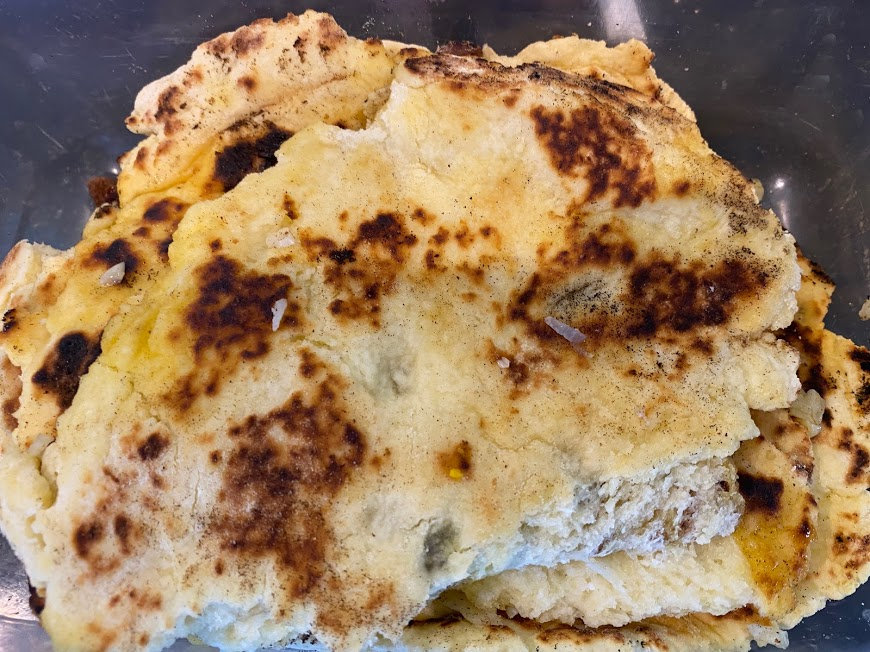

Naan Bread
 Meat
Meat
Not too hard to make to go with Indian

2 cupself-raising flour1/3 cupcoconut1/2 tspbaking powder1/4 tspsalthandfulsultanas
Mix self-raising flour, coconut, baking powder, salt, and sultanas together.
1 cupGreek yoghurt
Add Greek yoghurtand mix well
Knead into dough and roll
Cook in pan for a couple of mins each side
2 clovesgarlic2 tbspbutter
Add melted garlic butter on top.